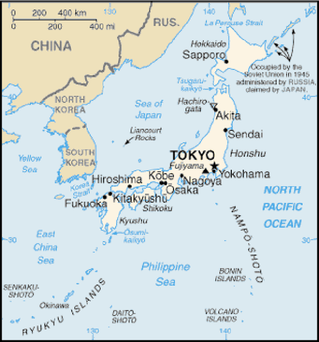
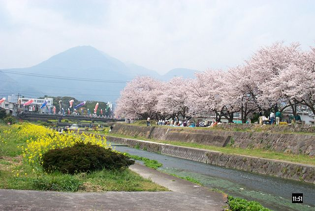

ABOUT JAPAN
The nation of Japan is an archipelago of 6,852 islands located in
the Pacific Ocean (Japan, 2012, par. 1-2). The cultural grammar of
Japan is both subtle and distinct because of the emphasis placed on
achieving a harmonious life. Harmony is a very important part of Japanese
life and guides the society in family and business matters
(Kwintessential, n.d, "Harmony in Japanese Life").

COLLECTIVE VALUES AND COMMUNICATION
The current culture of Japanese society is a hybrid of influences from Asia,
Europe and North America (Culture of Japan, 2012, par. 1). However, many elements
of traditional Japanese culture have their origins within Chinese culture such as
the language and aspects of Japanese literature (Mi Marketing Pty Ltd, n.d, par. 1-3).
In personal relations the Japanese often abstain from competition and confrontation.
The Japanese society employs a set of vocabulary terms used to reflect humbleness and
respect to indicate a person's status. That status is a sort of reciprocity founded on
the very relationships of the people. This dependency thus perpetuates the relationship.
The view of one's self in Japanese society is established not by one's personality but
through the interactions of people (Japanese Values, 2012, par. 3, 7, 9, 11).
There are several festivals in Japanese custom that are celebrated throughout
the year. Such events usually keep the people entertained with food and carnivalesque
entertainment (Japanese Festivals, 2012, par. 3). A few of the national holidays in
Japan are the Cherry Blossom Festival (Hanami), Bon Festival and New Years
(Japanese Festivals, 2012, "Nationwide festivals").